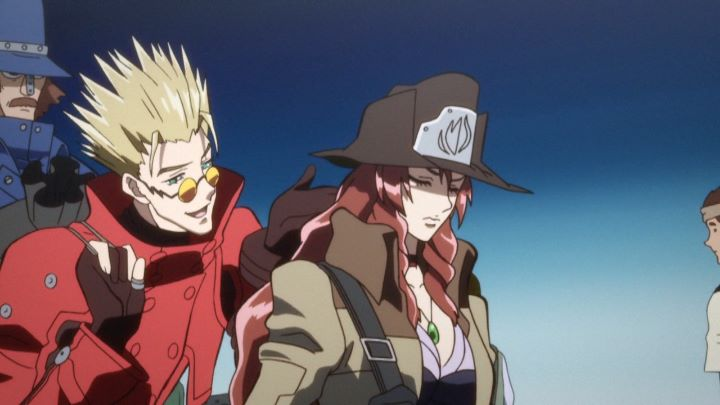

The original "Trigun" anime was released back in 1998, and it reportedly had a lukewarm reception in its native Japan (whether this means it sold poorly or simply ok will vary depending who you ask). It did become more of a cult classic years later in America through television broadcast: its humor and fairly long episode count made it a good choice for Cartoon Network, at the time an important portal into anime for English audiences. Being a Western, perhaps it felt more appropriate to Americans than it did in Japan. Anyway, in 2005 (a few years after its revival in the USA), it was announced that a feature film was being written by the original studio of the television series. After being stuck in production hell, the film "Trigun: Badlands Rumble" released in 2010, over a decade after the series ended in Japan. The story reportedly takes place somewhere in the middle of the original series, following Vash's adventures with a specific bandit: Gasback, a huge man/machine hybrid with a crew of thugs under his command. Purely by chance, Vash had stopped an attempted robbery by Gasback, but let him escape instead of killing him. Years later, Vash comes across Gasback again in his new attack on a large city, and across Amelia, revealed to be his daughter and swearing to kill Gasback because of his lifestyle affecting her and killing her mother. For the first time, Vash faces the consequences of allowing someone to live, and tries to resolve the situation before it reaches its eventual outcome.Feature film spin-off stories can vary (see films to "Fullmetal Alchemist," "Naruto," "One Piece," "Bleach," "Eureka Seven," etc.). Thankfully, "Badlands Rumble" is simple enough to enjoy, but effective enough to care about. There are a handful of details that require having seen the original show to appreciate (the appearance of cameo characters, and the fact that Vash doesn't age after two decades), but for the most part this movie stands alone and can be enjoyed without any context for newcomers. The dilema Vash faces is a solid one, and the action that plays out makes this a strong Western all around. And if you enjoyed the comedy of the original show, be it from Vash's love for doughnuts or romantic failings, there's a healthy amount of that as well. Aside from the strong story, "Badlands Rumble" also improves upon the original series in its visuals. Somehow, the original series' director and animation team was able to come back for the movie, and it feels like they were given the freedom to make "Trigun" the way they always wanted to in this. The high-definition visuals are a sharp improvement from the show, even though it still keeps a muted tone that meets the right balance of modern production values and old-school cel anime. Somehow, Johnny Yong Bosch was able to come back to voice his iconic character in Vash (even though most other characters were replaced by newer actors), and the music is on point as much as it has ever been. For longtime fans, to see "Trigun" in this light is a revelation that can bring a tear to an eye.  All in all, this is an exceptionally solid Western and action film that longtime or newtime anime fans can have a fun time with. In won't blow your minds, but it's rare to see a continuation film to a series to be this GOOD. If you want to relive an anime classic or want to understand what all the fuss was about, "Badlands Rumble" gives it in one convienient package.
- "Ani" More reviews can be found at : https://2danicritic.github.io/ Previous review: review_Trigun Next review: review_Trinity_Blood